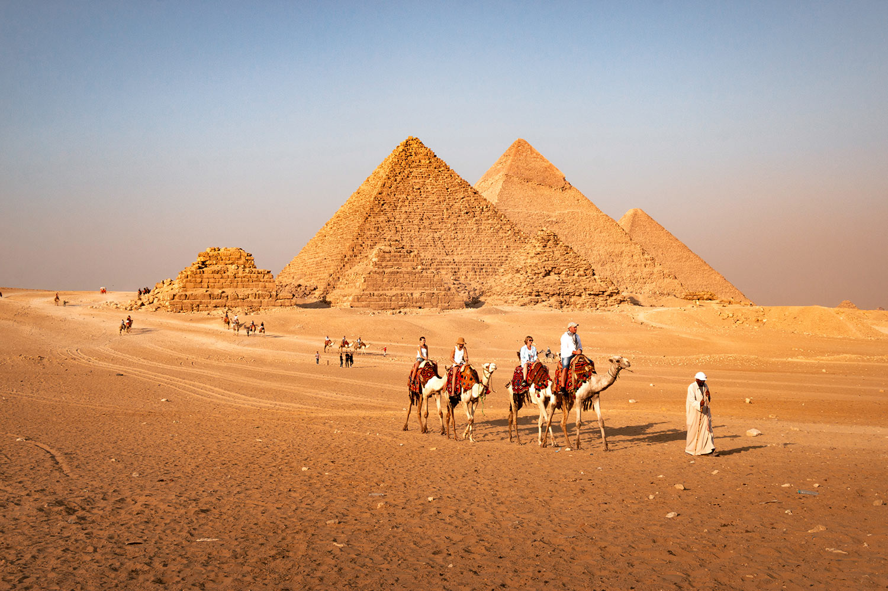
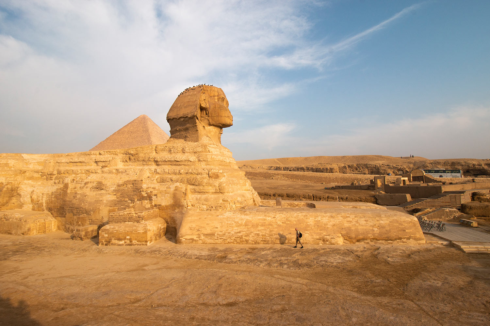
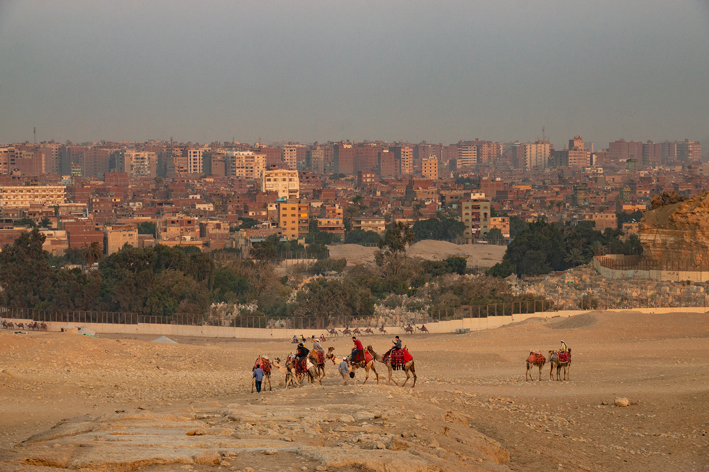
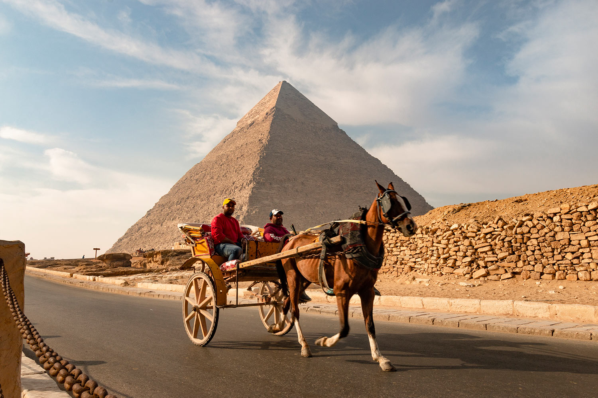
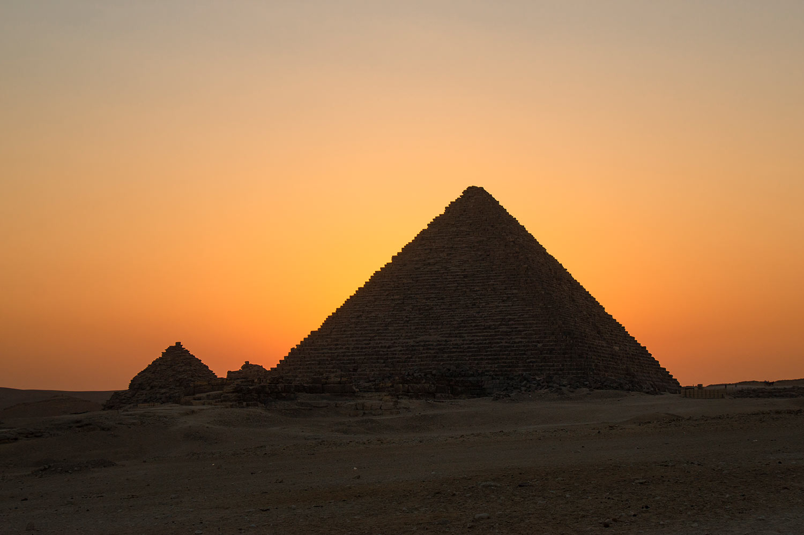
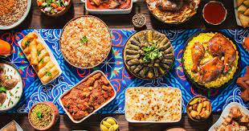
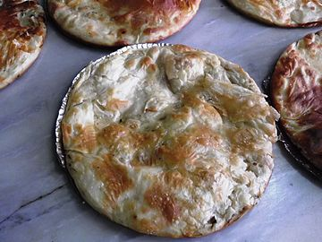
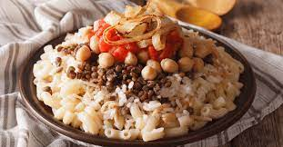

Les pyramides de Gizeh
Description
Les pyramides de Gizeh sont l'une des sept merveilles du monde et ont été les structures humaines les plus hautes du monde pendant des milliers d'années. Datant de plus de 4 500 ans,
ces tombes impressionnantes ont été construites par les pharaons de l'Ancien Empire égyptien. Le but des pyramides était d'être des tombeaux traversant l'éternité : c'est toujours le cas aujourd'hui.
Si vous envisagez de vous rendre aux pyramides de Gizeh, voici tout ce que vous devez savoir sur votre visite.



Activités
La nécropole de Gizeh est la plus connue de toutes les nécropoles égyptiennes, c'est celle sur laquelle se dresse les fameuses pyramides de Khéops, Khéphren et Mykérinos et le Sphinx.
La visite du site de Gizeh se fait à pieds, il n'est pas si grand que ça, même si il vaut mieux prévoir de bonnes chaussures de marche. L'intérêt de cette nécropole est de pouvoir s'approcher des pyramides pour juger sur place de leurs tailles,
de faire le tour du Sphinx, d'entrer dans les temples, en particulier celui de Khéphren. Mais si vous le souhaitez, vous pourrez aussi entrer dans les pyramides, et même on vous le conseille. Non pas qu'il y ai de magnifiques décors - les pyramides de la IVe dynastie en sont dépourvus -
mais pour l'impression de marcher dans les pas de personnes ayant vécues il y a 4700 ans. Sinon la nécropole vous expliquera ce qu'était un complexe funéraire à l'époque, vous permettra de voir une magnifique barque solaire, de profiter de la vue à dos de dromadaires, etc.



Gastronomie
Le propre de la cuisine égyptienne réside dans son aspect cosmopolite. C’est un savoureux mélange de spécialités turques, grecques et syriennes. C’est en réalité une composante de la cuisine arabe dans laquelle on retrouve les boulettes de viande, le houmous ou le fameux thé à la menthe. Cependant, la cuisine égyptienne est moins diversifiée et peu connu.
Aujourd’hui, la cuisine égyptienne fait partie intégrante de la cuisine du monde arabe. Elle varie du nord au sud et sera plus «méditerranéenne» vers Alexandrie et plus «africaine» vers Assouan. Pour goûter à cette cuisine du monde égyptien, le mieux est de s’aventurer dans les bouis-bouis locaux. En effet, les restaurants plus haut de gamme servent une cuisine internationale commune.
Avant d’entamer un pain garni au kiosque d’une rue, il est bon de vérifier la fraicheur du produit. La cuisine égyptienne locale et informelle peut révéler des surprises.



Historique
Le plateau de Guizèh se trouve en amont du delta du Nil, dans la Basse-Égypte. Située au nord-est du pays, Gizeh est voisine du Caire, la capitale. Guizèh est avant tout connue dans le monde entier pour ses pyramides. Sur son plateau désertique se dressent ces monuments majestueux, témoins d'une époque très ancienne où le Pharaon était considéré comme le fils du dieu Rê. Les étés sont très chauds et secs alors que les températures en hiver ne descendent jamais en dessous de 8°C ! Evitez cependant les mois de juillet et août qui peuvent être très vite caniculaires. Véritables chefs d'œuvre architecturaux, les pyramides de Guizèh ne cessent d'attirer les archéologues et passionnés du monde entier. Pourtant inutile d'être un expert pour apprécier leur beauté. Les trois principales pyramides du plateau de Guizèh sont celles de Khéops , Khéphren et la « petite » Mykerynos. Guizèh est un lieu plein d'énigmes comme nous le rappelle son magnifique Sphinx, réalisé à l'effigie du roi Khéphren et édifié en 2 590 avant J.-C. Mi-homme, mi-lion, cette statue haute de vingt mètres est la gardienne du site. Si le Sphinx est connu pour avoir le nez cassé , peu de visiteurs savent qu'une barbe postiche lui fut ajoutée par Thoutmosis IV.
Guide
- Choisir la bonne période : Évitez de visiter les pyramides en été car les températures peuvent atteindre 40 °C. Les meilleurs mois pour visiter les pyramides sont de novembre à février, où les températures sont plus douces.
- Préparer son équipement : Il est important de prévoir des chaussures confortables pour marcher sur les chemins de sable, une casquette ou un chapeau pour se protéger du soleil et de la crème solaire pour éviter les coups de soleil.
- Choisir un guide : Il est recommandé de prendre un guide touristique pour visiter les pyramides, car ils peuvent vous donner des informations précieuses sur les lieux et vous aider à éviter les arnaques.
- Acheter les billets à l'avance : Vous pouvez acheter les billets en ligne à l'avance pour éviter les files d'attente à l'entrée. Vous pouvez également opter pour un billet combiné qui inclut l'entrée aux différentes pyramides de la région.
- Éviter les vendeurs ambulants : Il y a souvent des vendeurs ambulants à l'extérieur des pyramides qui peuvent essayer de vous vendre des souvenirs ou des services. Évitez-les car ils peuvent être insistants et importuns.
- Respecter les règles : Il y a des règles strictes à suivre lors de la visite des pyramides, notamment l'interdiction de monter sur les pyramides et de toucher les hiéroglyphes. Respectez ces règles pour préserver l'intégrité des monuments et éviter des amendes.
- Se préparer à l'affluence touristique : Les pyramides de Gizeh sont une destination touristique très populaire, donc attendez-vous à une affluence importante de visiteurs. Essayez de visiter les pyramides tôt le matin ou en fin d'après-midi pour éviter la foule